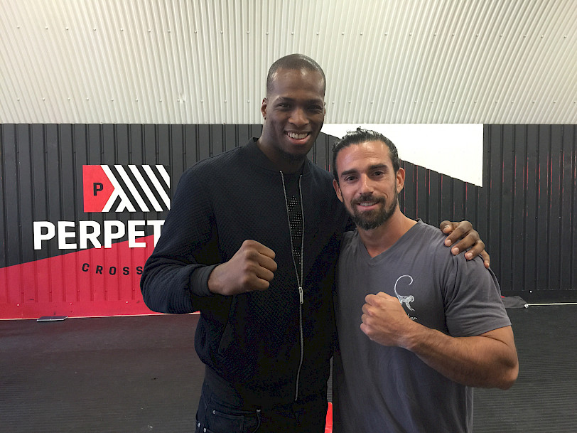

I am really enjoying watching MMA (Mixed Martial Arts) once again lately.
I was very much in tune with the field in the early days of UFC - 1990's and even before but as most developing disciplines, my interest waned off as the field became more and more specialized and the wide laboratory of martial arts eliminated ruthlessly many many things. This was both MMA's great secret of success and progress but also a serious drawback.
These early days were exciting. The only issue was that in some cases the baby was thrown out with the bath water and things that *could work but DID NOT work from this reason or that - were dismissed prematurely. Its a rough game and conclusions must be made - that's the nature of the sport.
For me the closest to the moment of creation we stand- the more exciting the field is, since I am examining it through the eyes of a generalist mover and not via specialist - sports performance and technical evolution points of view alone.
The same phenomenon reproduced itself a number of times in my head - breakdancing, Parkour, Capoeira, Crossfit. My attention always is highest during those early post-creation phases and/or the beginning of the high sophistication/complexity phase. (in Capoeira - the sophistication phase happened centuries after creation)
As the whole thing becomes super specialized and performance increase - my boredom sets in. (even though specific performance continues to increase!)
So, I was excited to be excited again from MMA and it is all thanks to a phenomenon that is happening under our noses and manifesting through some interesting new fighters that are also.... Not only great fighters but good Movers as well.
First - lets have a look at the very popular and outspoken Conor McGregor.
What more can be said about Conor?
An outspoken but very exciting fighter to watch. Conor has mentioned countless times now that his approach to the game of MMA is highly MOVEMENT related and not just fighting related.
He has been following my work and mentions often various concepts and ideas I've popularized in interviews and media work.
And Conor is above all.... Applying.
He is moving around and out of the box that is modern MMA. He is applying techniques, positions, postures, footwork and offensive/defensive movements that might be viewed as 'unorthodox' but that is exactly the reason he is rising above the orthodox fighters.
Conor is more than anything a fighter with a great grasp of principles - timing, distance, leverage, rhythm, etc. This goes beyond techniques.
I've always viewed principles as 'master keys' vs techniques which are simply A key. (a concept I borrowed from my martial artist friend and teacher Strider Clark) When you encounter a specific scenario, most fighters start to browse through their set of keys but the best of the best use these 'master keys' to resolve anything and immediately. No wasted effort, versatile and immediate solution. In essence - principles MANUFACTURE instant, scenario perfect and original techniques but techniques without principles are guns without ammunition.
Conor is also known as a 'big mouth', a 'cocky bastard', etc but I believe those offended/angered are those who either do not understand show-biz, the need to 'sell' yourself or get a serious 'ego response' to characters like Conor. He is an entertainer and understands the value of being your own brand.
On the subject of 'Loud Mouths' and 'Big Talkers' let me share with you a point of view that is not common but I enjoy playing with none the less: (instead of the same old same old fucking boredom)
Slick talkers who cant back their big mouth up have exponential decay when future unfolds.
Humble souls who don't talk much but then outperform the expectation even just by a little - benefit from exponential growth of their stocks.
For most - better talk small - you might still disappoint but at least you will be perceived as 'modest'. If you positively surprise - even by a bit - you will be perceived as 'great' with MINIMAL performance to back it up.
I suspect this is the source of much 'modesty' out there.
The real lions are the big talkers who outperform their big talk. (Ali, Churchill, Dali, Serge Gainsbourg, Jordan, etc)
That approach requires some serious backing up due to increased expectations and a pair of kahunas to deal with the risks. They can make their life much simpler and decrease risk by talking smaller but their nature does not support this.
Big talkers with big backs. Bigger than life. They make things interesting and colorful and they sometimes bounce their field in leaps and bounds forward using their belief, fire of passion, obsession and most importantly their BIG MOUTHS, following the strong rule of imagination-creation:
...
FAKE IT UNTIL YOU MAKE IT.
And Conor might have faked it but he is definitely MAKING IT.
Another exciting fighter but in a different point on the path I got to meet last week in my workshop in London - Michael 'Venom' Page.

Exciting fighter to say the least.
What a great display of movement and principles: the footwork, the sense of distance, the use of peripheral vision, (looking away but keeping the most movement sensitive part of the eye engaged in the opponent...) the stamina that can only come from looseness and relaxation and the great broken rhythm offensive work.
Michael is very successful with straight blast KO wins one after the other and a rising name in the field of MMA but above all - I appreciate his innovation, contribution, originality and courage. This guy is leaving his mark and changing dogmas often prematurely solidified in stone in the field. ('Keep your hands up!' comes to mind as his moto is 'fighting with hands down')
You'll have to catch him if you intend to put him away, no easy task!
The type of movement that we see by the likes of Connor Mcgregor and Michael Page stems from the GENERALIST MOVEMENT perspective that I've been promoting for years now. How far can they go against the highly specialized 'one technique 10,000 times' kind of fighters?
Hard to say but great strides are being made already.
And still - even if the specialists will eventually prevail - who do you truly enjoy watching more? Who is contributing to the movement culture and the mma culture? who is adding to our collective knowledge? who is examining, taking risks, pushing the limits?
What is certain, the entertainment value is high. New crowds are being drawn to watch MMA - these FREE FIGHTERS are of great service to the industry and community of MMA.
Conor McGregor, Michael Page - you have my respect!
Ido.